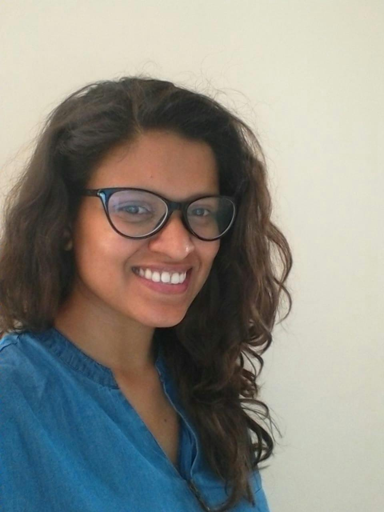

Monalisa Thakur
Interaction Designer · Design Researcher
I'm an Interaction Designer trained at NID, working at the edge of complex and often unfamiliar domains — enterprise software, extended reality, speculative futures. My work starts with research and ends with things that get made: products, frameworks, workshops, artefacts.
I'm most useful when the design problem is still being defined. When the technology is new, the users are hard to reach, or the brief is genuinely open — that's where the research-led approach I developed at NID matters most.
I've designed for Titan Company, Holosuit, and Stride.io, and I've facilitated design workshops at the National Institute of Design and Avantika University. The work cuts across product design, tangible interaction, and strategic research — connected by a consistent interest in how people construct meaning from the tools and systems around them.
Download ResumeKey Learnings
Technology adoption requires examination through social, cultural, and personal perspectives.
Observing the ordinary can give meaningful insights into human behaviour and how our society functions.
Designing for the future requires a trans-disciplinary approach rather than templated solutions.